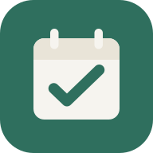

플래너를
휴대폰 앱으로
하루 계획부터 루틴, 집중, 기록까지.
차분한 새 화면과 하단 빠른 입력을 만나보세요.
안드로이드 앱 다운로드 · 0.1.1
Android 7 이상 · 약 3.4 MB · 미니멀 디자인 업데이트
- 안드로이드 폰에서 파일을 내려받아 열어 주세요. 설치 출처 확인 화면이 나오면 직접 확인 후 진행해 주세요.
- 0.1.0을 사용 중이라면 기존 앱을 삭제하지 말고 새 APK로 업데이트하세요.
- 기존 웹 데이터가 있다면 웹 설정에서 JSON으로 내보낸 뒤 앱 설정에서 가져오세요.
- 앱 설정에서 알림을 허용하고 ‘테스트 알림’을 눌러 보세요.
현재 데이터는 기기에 저장돼요. 폰·PC 동기화는 다음 단계에서 연결합니다. 알림은 30일/최대 400건을 미리 예약하고 앱을 열면 갱신해요. 절전 상태에서는 늦을 수 있습니다. 실제 휴대폰 설치·수신 확인은 아직 남아 있어요.
PC 웹 플래너 열기